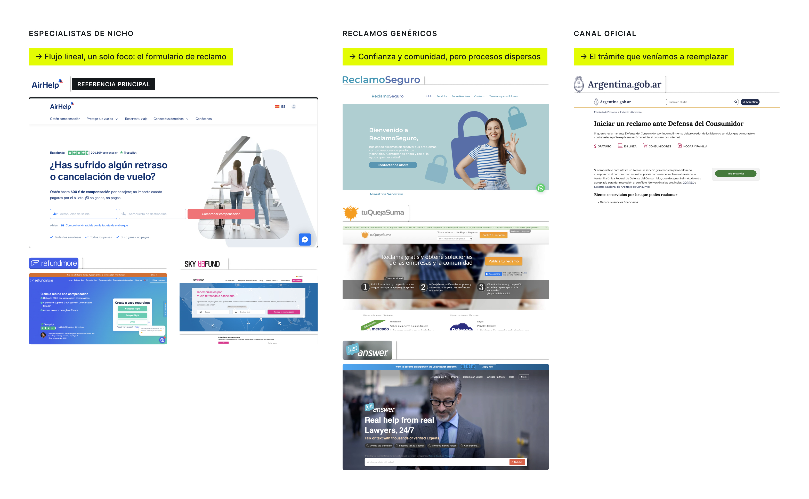

Título del aprendizaje
Cuerpo del aprendizaje en 14.5px --text-2. El número usa Google Sans 400 · 20px con el subrayado --accent-strong del sitio.
Inventario vivo del sistema del portfolio: tokens de color, tipografía, botones y componentes, con sus variables CSS. Cambiá el tema con el toggle de arriba para ver ambos modos.
Todos los colores viven como variables en :root y se redefinen en html[data-theme="dark"]. El acento celeste es el mismo en ambos temas.
Los tokens --ink / --ink-text se usan en el footer y en .pull-quote: bandas de contraste que se ven siempre oscuras, en claro y oscuro. --accent-strong es una variante oscurecida de --accent (3.7:1 de contraste sobre blanco: cumple WCAG AA para texto grande/UI, no para texto normal) para texto que necesita verse "de color acento" sin perder legibilidad; en oscuro no hace falta oscurecer nada, así que vale lo mismo que --accent.
Google Sans (400/500) para todo el sitio: headings y detalles display via --font-display, cuerpo de texto via --font-body. Ambas variables usan la misma familia, importada de Google Fonts.
Hero h1
Título de sección h2
h2 de caso de estudio
h3 de tarjeta de caso
h3 de work-item
h3 de caso de estudio
Lede del hero: párrafo introductorio en gris.
Cuerpo de texto base del sitio, para lectura larga en los casos de estudio.
Texto secundario de tarjetas y descripciones.
Caption de figuras, captions del showcase y footer bottom.
| Token | Valor | Uso |
|---|---|---|
--max-w | 1180px | Ancho máximo de nav, hero, secciones y footer |
--content-w | 720px | Columna de lectura en casos de estudio |
--r-card | 26px | Radio de tarjetas, figuras, showcase y callouts |
--r-card-lg | 36px | Radio de foto del hero, footer y bloques grandes |
--r-pill | 999px | Botones y theme toggle |
| Padding lateral | 48px / 24px | Desktop / mobile (breakpoint 900px) |
| Padding de sección | clamp(70px, 9vw, 130px) 48px | Vertical de cada sección de la home |
.btn .btn--solidFondo --accent-strong, texto --accent-ink (5.7:1 de contraste, cumple WCAG AA), radio píldora, 14.5px/500, padding 16×30. Hover: invierte a fondo oscuro con texto blanco y sube 1px.
.btn .btn--outlineTransparente con borde --border-strong. Hover: fondo y borde --accent con texto --accent-ink, igual que las flechas del carrusel.
.case-card__linkMisma anatomía que el secundario. Dentro de .case-card vive oculto (opacity:0, posición absoluta) y aparece recién con el hover de la tarjeta, junto con el crecimiento del panel; acá se fuerza visible para poder mostrarlo suelto. Hover: fondo y borde --accent-ink, texto y flecha en blanco.
.carousel-btnCírculo 44×44 con borde. Hover: fondo y borde --accent. Deshabilitado: opacidad .35 (tercer ejemplo).
.theme-togglePíldora 44×24; el punto de 18px se desliza 20px y pasa de --accent-ink a --accent en modo oscuro. (Muestra estática: usá el de la nav.)
.eyebrow12.5px uppercase, tracking 0.08em, color --accent-strong. El <span> interior usa --accent-text.
.section--cases .eyebrowSuma un círculo --accent de 9px antes del texto. .cases-band ya no tiene fondo negro fijo: la sección de casos usa los mismos tokens de texto/borde que el resto del sitio (--text, --border), tanto en claro como en oscuro.
.case-hero .eyebrowMismo .eyebrow base — ya usa --accent-strong por defecto, así que esta regla queda como refuerzo explícito en .case-hero.
.work-item .eyebrowSubrayado de 3px al ancho del texto, color --accent-strong posicionado abajo.
.nav__markGoogle Sans 400 · 20px, color --text, sin fondo. En el hero, la palabra "negocio" usa el resaltador con --gradient-warm (naranja → coral → azul) y una transición de background-size al terminar el tipeo.
.chipPíldora con fondo --surface, 12.5px, padding 5×12. Usado en los skills de "Sobre mí"; se agrupa con .chip-list (gap 8px, wrap).
.case-cardImagen de fondo (.case-card__media, object-fit: cover) con .case-card__panel encima en efecto glass (rgba(255,255,255,.55) + backdrop-filter: blur(24px) saturate(180%), borde superior blanco sutil), texto en --accent-ink, esquina superior izquierda con radio de 46px. Por default solo se ve el h3; al hover el panel crece (top de 76% a 26%) y recién ahí aparecen el párrafo (clamp de 3 líneas, -webkit-line-clamp) y .case-card__link, con sombra 0 8px 20px y translateY(-3px). Proporción 4:4.05; en el carrusel ocupa calc(33.333% - 24px) del ancho (100% en mobile) con scroll-snap. El -24px (en vez del -16px que usaría el cálculo estándar de 3 columnas con gap) deja ~24px de colchón visible al final de cada posición de scroll, más scroll-padding-left: 16px en .case-track: así la sombra del hover nunca queda cortada por el overflow-x: auto, sea cual sea la card que quede al borde.
.case-card--soonDel prompt al carrito: propuesta de alta de pedido en lenguaje natural para la tienda B2B.
PróximamenteIgual anatomía que .case-card, sin <img> ni link: cursor: default, opacity: .85. La píldora .case-card__soon (borde punteado, punto --accent-ink) queda siempre visible, empujada al fondo con margin-top: auto, sin depender del hover.
.cases-more¿Buscás diseño gráfico? Antes del UX/UI hice piezas de campaña, key visuals y gráfica digital para retail y moda.
Ver diseño gráfico en Behance →Cierra el carrusel de casos en la home: texto en --text-2, separado por un filete --border, con el .btn--outline estándar. Enlaza a Behance para mostrar trabajo de diseño gráfico previo al UX/UI.
.work-itemMe hago cargo del proceso completo, no solo de la ejecución visual de un flujo ya definido.
Fondo --surface, sin borde ni radio, padding 40×34. En la home van tres en grilla con gap de 20px.
.pull-quoteLas personas con un reclamo de consumo en Argentina no tenían un camino claro para resolverlo.
Google Sans 500 · 23px, tarjeta de contraste: fondo --ink constante (no cambia con el tema), texto --ink-text, comilla de apertura en --accent.
.callout--r-card).
Para decisiones y contexto de colaboración. Título en 12px uppercase --accent-text.
.learnings / .learningCuerpo del aprendizaje en 14.5px --text-2. El número usa Google Sans 400 · 20px con el subrayado --accent-strong del sitio.
Los ítems se separan con un filete --border. En mobile (<600px) el número pasa arriba del texto.
Reemplaza a las listas con <strong> en las secciones de aprendizajes de los casos. Grid de 56px + 1fr, gap 20px.
table.spec-table| Columna | Columna |
|---|---|
| Celda con borde inferior | 14.5px |
| Encabezados en 11.5px uppercase | --text-2 |
.emotion-stripUser journey emocional: etapas sobre --bg unidas por flechas; en mobile se apila en columna y las flechas rotan 90°.
.figure
--bg, separado por un filete.Sin borde ni radio, fondo --surface. En desktop, al pasar el cursor aparece la lupa de zoom (lens.js).
.figure__placeholderassets/nombre-del-asset.jpg.showcaseRecorrido animado de pantallas (showcase.js). Fondo blanco fijo en ambos temas para que la transición entre capturas no se note. Con prefers-reduced-motion no avanza solo.
| Interacción | Dónde | Especificación |
|---|---|---|
| Typewriter | h1 del hero | Tipeo carácter a carácter (24–62ms) con caret celeste; al final pinta "negocio" con el resaltador |
| Hero rise | Elementos del hero | Fade + 14px hacia arriba, escalonado de .08s a .34s |
| Foto focus | Retrato del hero | Trama halftone con ventana de foco que sigue al cursor (clip-path animado) |
| Lupa de zoom | Figuras de casos | Lente 300×210 con marcas de encuadre, zoom 2.5x (lens.js) |
| Showcase | Sliders de casos | Crossfade + desplazamiento de 28px, .9s ease |
| Curva estándar | Hover y transiciones | cubic-bezier(.22,.61,.36,1) · duraciones .15s–.45s |
Todas las animaciones respetan prefers-reduced-motion: reduce.